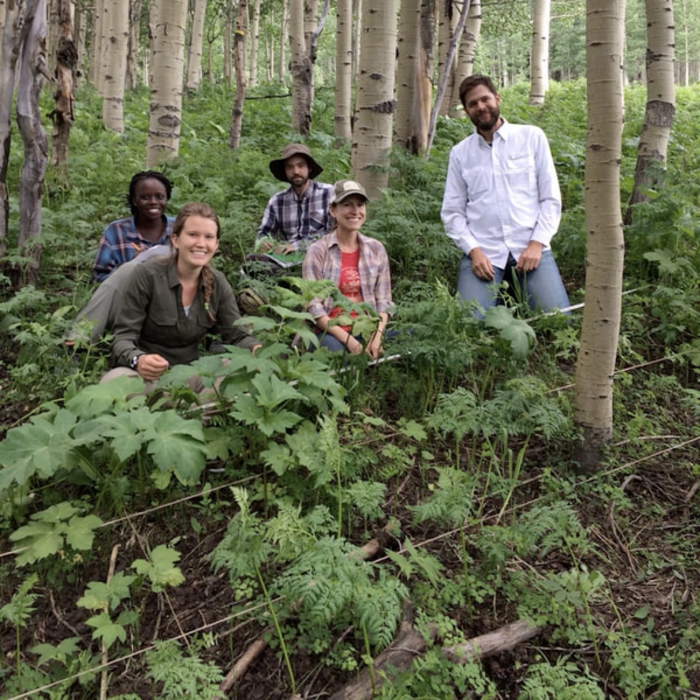

Plant population dynamics under changing pollination regimes
Reproduction in plant species depend, at least in part, on animal pollinators to transfer pollen between stationary individual plants. Therefore, seed production and plant population persistence must depend on pollination, but theory suggests that it may not be a simple, straightforward relationship. Understanding these relationships will be essential to effective conservation of plant biodiversity amid the mounting evidence for pollinator declines and increasing numbers of pollinator species in peril.
Experimental pollination demography
Plants face uncertainty in the availability of pollination services that can drastically change their costs of reproduction from one year to the next. With collaborators Amy Iler and Paul CaraDonna (Chicago Botanic Garden), we are experimentally altering the amount of pollination perennial plants receive and following their demographic responses across the full life cycle. Our work is grappling with the role of trade-offs and stochasticity to better understand how population dynamics are buffered against (or susceptible to) changes in their species interaction partners.
This collaborative work is supported by NSF DEB awards 1754518, 2337426, and 2337427.


Pollinator network rewiring & functional compensation during pollinator extinctions
When a pollinator goes extinct, remaining species gain access to floral resources once dominated by the lost species. A single interaction change can trigger others that ripple through the entire network as every other species responds to interaction rewiring that impacts their preferred flower species. NSF Graduate Research Fellow Melina Schopler is leading an experiment to understand how pollination networks rewire and the consequences of network structure for realized pollination service.
Selected publications
Bain, J.A., Ogilvie, J.E., Petry, W.K. & CaraDonna, P.J. (2025) Nutrient niche dynamics among wild pollinators. Proceedings of the Royal Society - B, 292, 20250643. [doi] [pdf] [data]
CaraDonna, P.J., Petry, W.K., Brennan, R.M., Cunningham, J.L., Bronstein, J.L., Waser, N.M., Sanders, N.J. (2017) Interaction rewiring and the rapid turnover of plant-pollinator networks. Ecology Letters, 20, 385–394. [doi] [pdf] [data]